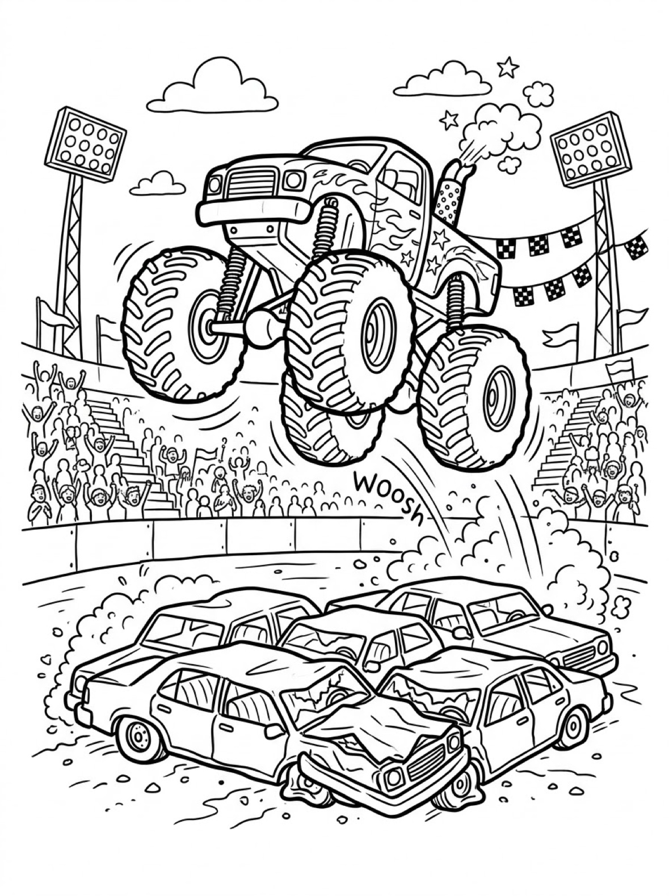
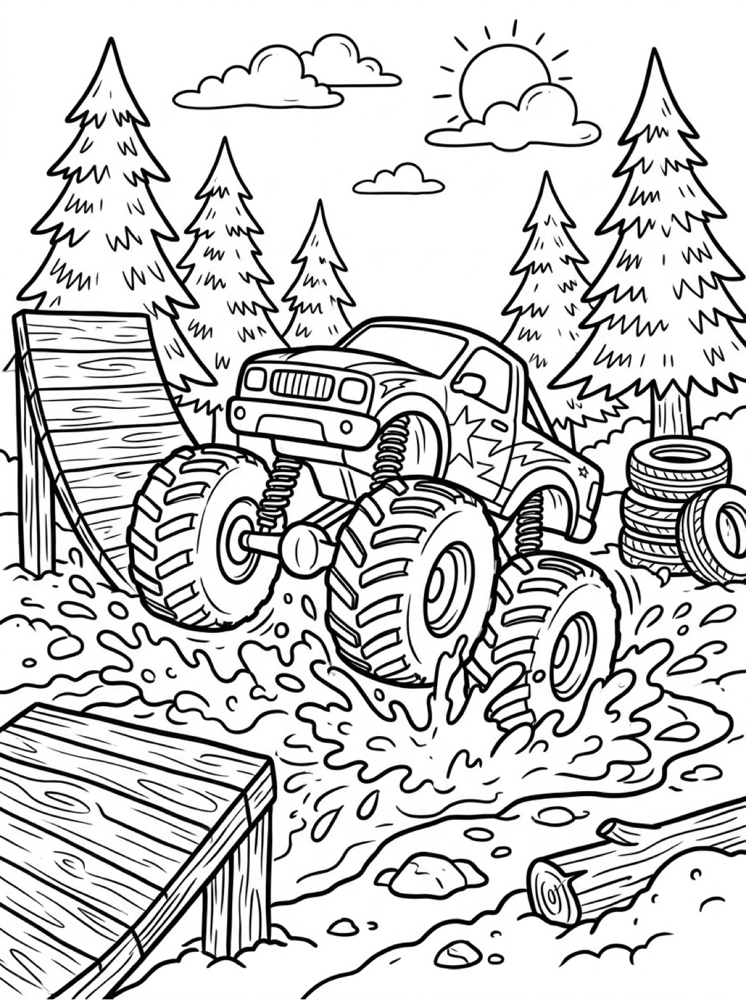
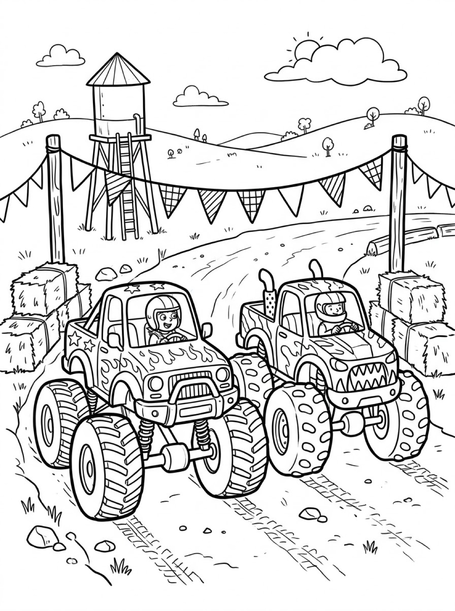

Free Monster Truck Coloring Pages Stadium Jump, Mud Run & Race Day Printables
These free monster truck coloring pages give your child three giant-wheeled adventures to color — a stadium jump over crushed cars, a mud-splashing run through the pines, and a side-by-side race on a dirt track. Download the set below, print at home on letter-size paper, and let the coloring fun begin. No signup needed.
Last updated: October 21, 2026
Quick Answer
Yes — this page has three free printable monster truck coloring pages: a truck flying over crushed cars in a packed stadium, a truck splashing through mud past a wooden ramp, and two trucks racing side by side on a dirt track. Bold outlines and big spaces, made for little hands. Download, print on letter-size paper, and hand over the crayons — no signup, no cost.
At a Glance
- Ages: 3–8
- Pages: 3 free printables
- Format: Print at home, letter size
- Cost: Free, no signup
- Supplies: Crayons or markers
- Time: 10–20 minutes
🛻 Monster Truck Stadium Jump Coloring Page

🎨 Download Your Free Stadium Jump Coloring Page
A flame-painted monster truck soaring over a row of crushed cars, crowd cheering and floodlights blazing — bold outlines, big spaces, zero signup.
⬇️ Download Free Stadium Jump Page 🖨️ Print Stadium Jump Page🎁 Free printable for preschoolers & kids
🛻 Monster Truck Mud Run Coloring Page

🎨 Download Your Free Mud Run Coloring Page
A star-spangled monster truck tearing through a giant mud puddle, ramp and tire stacks waiting on a pine-lined track — bold outlines, big spaces, zero signup.
⬇️ Download Free Mud Run Page 🖨️ Print Mud Run Page🎁 Free printable for preschoolers & kids
🛻 Monster Truck Race Day Coloring Page

🎨 Download Your Free Race Day Coloring Page
Two monster trucks racing neck and neck down a dirt track, drivers grinning under their helmets and hay bales lining the course — bold outlines, big spaces, zero signup.
⬇️ Download Free Race Day Page 🖨️ Print Race Day Page🎁 Free printable for preschoolers & kids
More Coloring Pages
Tap any picture to open its theme page and download the free printable.


🛻 How To Use This Page
- Browse the three designs and pick the truck scene your child will love most.
- Tap download or print under that design — the file opens full-size, ready for letter-size paper.
- Print a couple of copies so your child can try the same truck in different team colors.
- Color together with crayons or markers and display the favorites.
🛻 Why Kids Love Monster Truck Coloring Pages
Monster trucks are pure spectacle: wheels taller than the driver, suspension that bounces like a trampoline, and jumps that seem to break the rules of gravity. Coloring one lets your child slow that show down and take it apart piece by piece — the giant tires, the springy shocks, the flames on the doors — then rebuild it in any colors they want.
Every truck on this page is caught mid-action, which gives kids a story to color, not just a vehicle. Who is winning the race? How high is that jump? What color is the mud today? Print the same design twice and it never comes out the same — the stadium truck can be red on Monday and rainbow on Friday — and because every version is “right,” there is no frustration when a crayon slips outside the lines.
🛻 Meet the Three Trucks on This Page
The stadium jump. A flame-and-star painted monster truck hangs in mid-air above a whole row of crushed cars, exhaust puffing from its stack, while a cheering crowd waves from the stands on both sides. Floodlights, checkered bunting and a big hand-lettered “WOOSH” streaking under the truck make this the most dramatic page in the set — and the squashed cars at the bottom are a coloring project all by themselves.
The mud run. A star-painted truck powers through a giant mud puddle on an outdoor track, spray flying from all four wheels. A wooden ramp, a stack of spare tires and a fallen log line the course, with tall pine trees and a smiling sun behind. The mud splashes are big, forgiving shapes, which makes this the friendliest page for younger colorers who love getting “messy” on paper.
The race. Two trucks run side by side down a dirt track, their helmeted drivers grinning through the windshields. One truck wears flames and stars; the other has a toothy grin painted right across its grille. Hay bales, pennant bunting and a tall water tower on the hill set the country-fair scene, and the tire tracks in the dirt show exactly how fast these two are going.
✏️ Monster Truck Coloring Tips
- Pick the team colors first. Real monster trucks wear wild paint jobs — flames, stars, even shark teeth. Let your child choose a color scheme for each truck before starting, just like a real pit crew planning the paint.
- Make the mud look muddy. Browns and grays are the obvious choice, but purple mud and green mud get the biggest laughs. Layering two shades of brown makes the splashes look deep and gloopy.
- Count the tires. Each truck has four giant tires, and the mud run adds a stack of spares beside the track — a natural counting game for younger kids: how many tires are on the page in total?
- Display the finished truck. A favorite page on the fridge or bedroom door is the fastest way to get asked for the next one.
🛻 Coloring Pages for Different Ages
For ages 3 to 4, start with the mud run. The truck is one big, bold shape and the mud splashes are huge, so little hands can cover a lot of page fast without worrying about small details. Scribbling is fine at this age — they are learning how crayons move across the page and how hard to press.
For ages 5 to 6, the race is the sweet spot. Two trucks mean twice the decisions — matching team colors or fierce rivals? — and the drivers, hay bales and bunting add real choices to make without any tiny, fiddly parts.
For ages 7 to 8, hand over the stadium jump. It carries the most detail — the crowd, the floodlights, the bunting, the crushed cars and the lettering — and rewards careful coloring and patience. Older kids often spend the longest on this one.
🛻 More Monster Truck Fun After Coloring
After coloring, let your child announce the show like a stadium announcer. Who just made that jump? Which truck won the race, and by how much? Write their commentary on the back of the page (or let them dictate while you write) and the sheet becomes a keepsake instead of a throwaway.
Pair this page with the transportation coloring pages for a full vehicles afternoon: monster trucks first, then the everyday cars, trucks and machines they share the road with. And for kids who like their giants prehistoric instead of mechanical, the dinosaur coloring pages are the natural next stop.
🔗 More Free Printables You’ll Love
- Free Transportation Coloring Pages Cars, trucks, planes and everything that goes — the everyday vehicle collection.
- Free Dinosaur Coloring Pages Giant reptiles for kids who like their giants prehistoric instead of mechanical.
- Free Farm Coloring Pages Barn animals, tractors and farm scenes to print and color.
- All Free Coloring Pages Browse every free coloring page on the site, organized by theme.
❓ Monster Truck Coloring Pages FAQ
Are these monster truck coloring pages really free?
Yes — all three designs on this page are free original printables from MomYouNeedThis. Download them, print them at home, and color — no signup and no cost.
What ages are these coloring pages best for?
Kids ages 3 to 8 get the most from this set. Younger children can start with the big mud run truck and color the main shapes, while older kids enjoy the detailed stadium crowd and race scenes.
How do I print a coloring page?
Tap the download button under the design you want, then print the file on regular letter-size paper. The print button opens the full-size page in a new tab if you prefer to print from there.
Which design is the most detailed?
The stadium jump. Between the cheering crowd, the floodlights, the crushed cars and the lettering under the truck, it is the page older kids spend the most time on.
Can I make a coloring book from these pages?
Yes — print all three designs, stack them in order, and staple along the left edge. Add a cover sheet with your child's name on it for a finished homemade monster truck coloring book.